Урон
Наносит урон прикрепленному объекту [Уроном] при активации [Триггера].
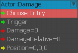
Узел «Повреждения» (ранее Game:DamageActor) используется для нанесения урона персонажам AI или игроку.
Целью узла должен быть актер, он не работает с объектами, которые не основаны на классе актера. Можно определить величину ущерба, а также позицию, в которой будет нанесен урон.
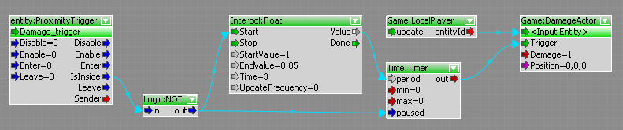
В приведенном выше примере, когда игрок находится внутри триггерной коробки, он будет наносить 1 урон игроку каждую секунду в начале. Поскольку Interpol:Float отсчитывает до 0,05, это уменьшит время между нанесением каждого удара.
EnslaveCharacter
Поработите одного персонажа другим.
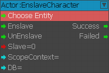
GrabObject
Целевой объект попытается захватить входной объект, соответственно, отбросить/бросить свой текущий захваченный объект.
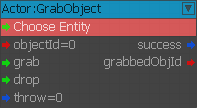
HealthCheck
Узел HealthCheck (ранее Game:ActorCheckHealth) проверяет работоспособность актера и выводит результат на логический выходной порт.
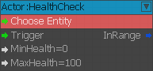
Диапазон работоспособности можно определить с помощью входных портов MinHealth и MaxHealth. Для работы целевая сущность этого класса должна быть актером.
Когда узел срабатывает, проверяется работоспособность целевого объекта, и если оно находится в пределах определенных значений, на выходной порт будет выведено значение true.
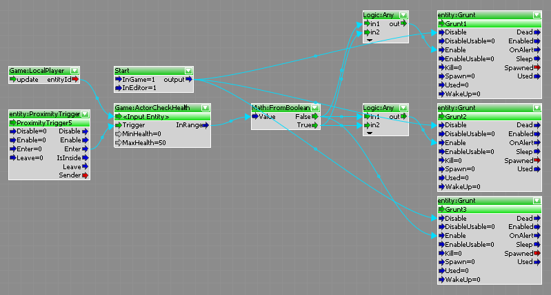
В приведенном выше примере мы настроили блок-график для проверки значения здоровья игрока, когда он входит в триггерное поле, а затем, если оно превышает 50, порождаются все три врага. Если здоровье игрока ниже 50, создайте только двух врагов. Здоровье актера проверяется с помощью Игра:ActorCheckHealth узел и проверка логического выходного порта с помощью Математика:FromBoolean узел. Вход в Математика:FromBoolean будет истинным, если состояние целевого объекта находится в диапазоне от 0 до 50. Математика:FromBoolean Затем узел разделяет выходные данные для передачи 2 или 3 врагам.
HealthGet
Ранее «Игра:ActorGetHealth». Получить здоровье сущности (актера).
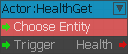
Этот узел выводит состояние целевого объекта в виде целого числа.
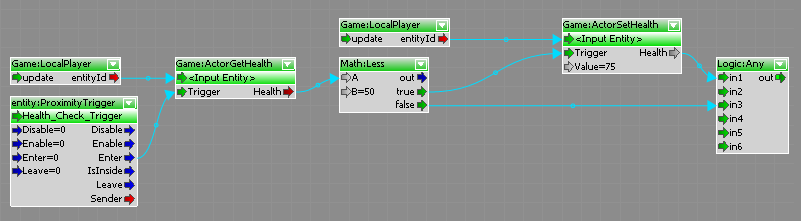
В этом примере работоспособность целевой сущности сравнивается с использованием узла Math:Less, чтобы проверить, не находится ли значение ниже 50.
Если это правда, он пройдет через истинный порт и в узел HealthSet, а затем продолжит работу с блок-графом. Если здоровье выше 50, ничего не делайте и переходите к следующему шагу блок-схемы.
HealthSet
Ранее «Игра:ActorSetHealth». Установить здоровье сущности (актера).
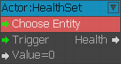
Этот узел можно использовать для установки количества работоспособности указанного объекта.
В приведенном выше примере мы проверяем уровень здоровья игрока с помощью узла Game:ActorSetHealth, и если он ниже определенного уровня, мы используем узел Game:ActorSetHealth, чтобы установить его на 75.
LocalPlayer
Выводит идентификатор объекта локального игрока - NOT USABLE FOR MULTIPLAYER WITHOUT UPDATING BY HAND AFTER GAMESTART.
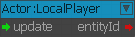
В этом примере ID объекта, входящего в триггер близости, сравнивается с локальным игроком ID с использованием Математика:Равно узел.
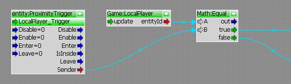
PlayMannequinFragment
Воспроизведите фрагмент Mannequin для данного объекта с заданными тегами.
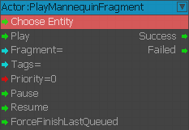
ProcClipEventListener
Прослушивает события процедурного клипа Mannequin.